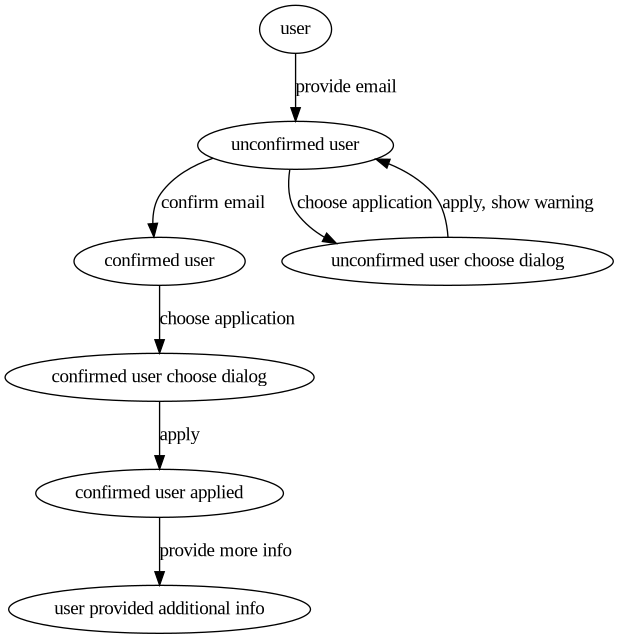

Functional programming in Ruby
12th of May, 2021
Ruby is a classic Object-Oriented programming language. But it also has some
functional features built into the language such as map, filter and
reduce. Here we will explore more functional concepts and how they can be
used in Ruby.
Function
First, a quick refresher on what a function is.
This is a function in mathematical notation:
f(x, y) = x + y
This is a function in Ruby:
def add(a, b)
a + b
end
A function only depends on its arguments, never on external state.
These are not functions:
def time_now
Time.now
end
b = 3
def add3(a)
a + b
end
but these are:
def time_at(timestamp)
Time.at(timestamp)
end
def add3(a)
a + 3
end
Functions bad!
ActiveRecord is a Ruby ORM used in Rails. How do we find the user with ID 5?
There's a method find in ActiveRecord, we can imagine that it is implemented
as follows:
class User
def find(id)
# Connection is global and set up somewhere else
$db_conn.find_by_id(id)
end
end
User.find(5)
Is this functional? No. This is functional:
class User
def find(db_conn, id)
db_conn.find_by_id(id)
end
end
User.find(db_conn, 5)
which is suboptimal at best. This is why we don't always want to use functional style in Ruby. But can we do better? Let's try that:
class User
def find(id, db_conn: $db_conn)
db_conn.find_by_id(id)
end
end
User.find(5)
If we don't specify anything but ID, it works same as with global db connection.
But what it also allows is to test this method with mocks, we
will use Minitest testing library:
require 'minitest/mock'
user_id = 5
user = User.new(id: user_id, name: "Peter")
test_db_conn = Minitest::Mock.new
test_db_conn.expect(:find_by_id, user, [user_id])
assert_equal User.find(user_id, db_conn: test_db_conn), user
Templates as functions
Rails by default uses templating engine called ERB which can use instance
variables defined in controller. Let's assume that controller has 2 variables
defined @id = 5 and @name = "Peter", then we can write a template like so:
<div>
Hello from <%= @name %>
with ID <%= @id %>
</div>
Rails also has a notion of a "partial" which means that a template can be included inside another template:
// main.html.erb
<div>
Hello from <%= @name %>
<%= render partial: 'id_partial' %>
</div>
// _id_partial.html.erb
with ID <%= @id %>
They both use same instance variables as in the example above. How do we make it functional?
// main.html.erb
<div>
Hello from <%= @name %>
<%= render partial: 'id_partial', locals: { user_id: @id } %>
</div>
// _id_partial.html.erb
with ID <%= user_id %>
Here _id_partial.html.erb does not directly reference the instance variable
@id and is a function because this partial doesn't rely on external state.
The problem of state
State - is something that accumulates during program execution. In Ruby it is typically contained in instance variables. Let's write a simple stack implementation:
class Stack
attr_reader :stack
def initialize(array = [])
@stack = array
end
def push(n)
@stack.push(n)
end
def pop
@stack.pop
end
def peek
@stack.last
end
end
st = Stack.new
st.push(1)
st.push(2)
st.peek #=> 2
st #=> [1, 2]
st.pop #=> 2
st.stack #=> [1]
In this simple implementation we can easily see all the program paths.
In order to know what st.pop returns, we need to keep track of @stack
instance variable.
But with more and more state it becomes increasingly harder. Imagine if
we need to know not 1 but 3 or 5 instance variables in order to know
what will be the return value of a method?
A functional implementation of a stack would be the following:
class FuncStack
class << self
def init(array = [])
array
end
def push(stack, n)
stack.push(n)
end
def pop(stack)
stack.pop
end
def peek(stack)
stack.last
end
end
end
st = FuncStack.init
FuncStack.push(st, 1)
FuncStack.push(st, 2)
FuncStack.peek(st) #=> 2
st #=> [1, 2]
FuncStack.pop(st) #=> 2
st #=> [1]
We don't rely on any external state and explicitly say which stack we want
to operate on. And we clearly see all the variables that are going to affect
what pop or any other method returns.
Functional style perks
- Easier to tell what functions do and what they return
- Easier to test
- More explicit
Going deeper with finite-state machines
Functional style can be used to model complex interactions between states. Instead of modifying the state in-place in response to different events, we can describe it as transitions between separate stages. Finite-state machine - is a convenient model for describing these transitions.
Let's try to model a user application for our services with the following steps:
- User provides an email
- User confirms the email
- User chooses appropriate application
- User confirms this application
- User provides additional info
The problem is that the User will not necessarily follow these steps sequentially as we described, for example the user can refuse to confirm their email until the step 4 or even never confirm it.
Let's try to model this interaction with the condition that the User can only confirm their application after they have confirmed their email:
This is the most simple FSM graph. And we can already see clearly all the states and draw additional lines in order to know what happens when user presses "Cancel" or a network error occurs.
Let's try to implement a part of it in Object-Oriented style:
class UserApplicationFSM
attr_reader :state, :data
def initialize(state = :user, data = {})
@state = state
@data = data
end
def provide_email(email)
case @state
when :user
@state = :confirmed_user
@data[:email] = email
else
raise 'Incompatible state'
end
end
def choose_application(application_id)
case @state
when :unconfirmed_user
@state = :unconfirmed_user_choose_dialog
@data[:application_id] = application_id
when :confirmed_user
@state = :confirmed_user_choose_dialog
@data[:application_id] = application_id
else
raise 'Incompatible state'
end
end
# ...
end
fsm = UserApplicationFSM.new
fsm.state #=> :user
fsm.provide_email('email@pm.com')
fsm.state #=> :unconfirmed_user
fsm.choose_application(1) #=> :unconfirmed_choose_dialog
This works quite well, we have an internal state which keeps track of what transitions are available and which data we get back. So what's wrong with it?
What if we don't have our fsm object all the time? For example, we operate
on this state across several http requests in a web-server. How do we
restore the state in the middle of a state machine? We could do it like that:
fsm = UserApplicationFSM.new
fsm.provide_email(params[:email])
session[:state] = fsm.state
session[:email] = fsm.data[:email]
# Send response
# Receive application_id
state = session[:state]
application_id = params[:application_id]
fsm = UserApplicationFSM.new(state, { email: session[:email] })
fsm.choose_application(application_id)
session[:state] = fsm.state
session[:email] = fsm.data[:email]
session[:application_id] = fsm.data[:application_id]
This gets hard to manage pretty quickly, we have to use session to store
intermediate data in order to restore the state of UserApplicationFSM.
A much easier approach is to always supply all the needed state in every
request. And we can also cheat along the way, as for example, we definitely
know that we don't need to keep email in the state all the time, it is
already saved into the database. We can as well use this kind of interface:
state, data = UserApplicationFSM.init
data[:email] = params[:email]
state, data = UserApplicationFSM.provide_email(state, data)
# Send response
# Receive :unconfirmed_user state and application_id
state = params[:state]
application_id = [:application_id]
data = { application_id: application_id }
state, data = UserApplicationFSM.choose_application(state, data)
This is much clearer because we always send state and data and we always
receive back state and data. The implementation of this FSM is left as an
exercise for the reader.
Wrap up
These are some general and broad ideas of how to use functional programming in Ruby. Not every concept should be designed in functional paradigm, but it is a tool that allows you to express ideas more clearly where traditional OOP style proves to be too cumbersome to operate on. Use with caution but explore with curiosity!